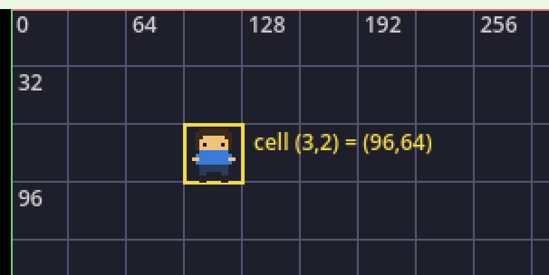
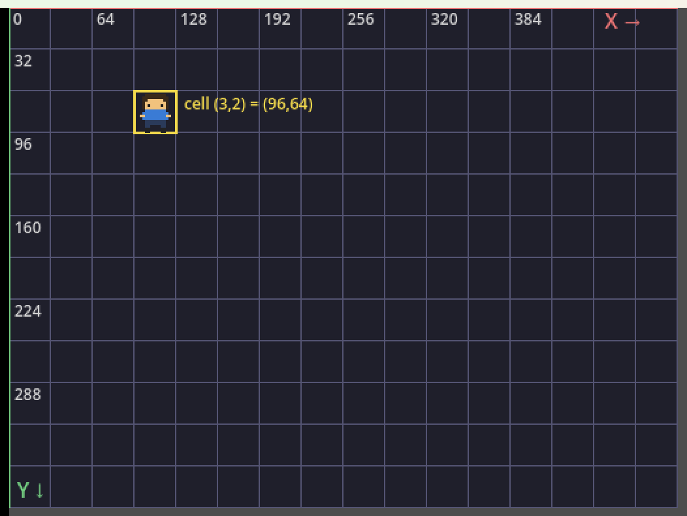
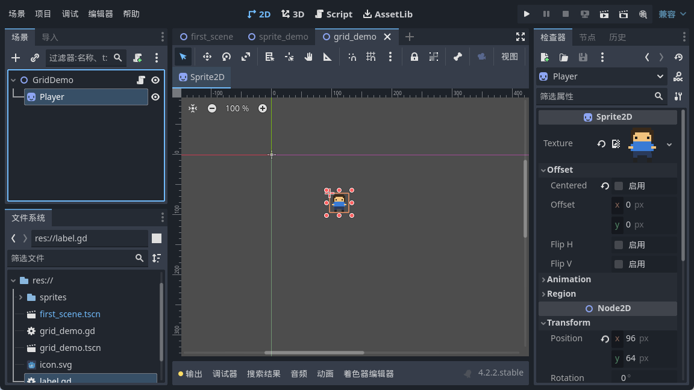
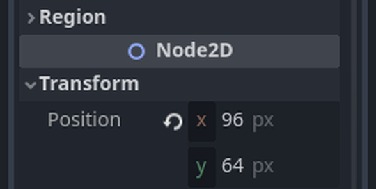

大家好，我是「山岚的运维笔记」。
上一篇，那个歪歪扭扭的像素小人总算站进了屏幕。但你同佢讲「往右走一格」，佢一脸茫然——一格到底有几远？
唔怪得佢。系我哋仲未畀佢一把尺。今天不聊动画，也不聊输入，就把这把尺子立起来。
定位一个点，无非横一个数、竖一个数，这个你中学就学过。新鲜的是 Godot 的规矩：原点在左上角，X 往右长，Y 往下长。
注意那个「往下」。你课本上的 Y 轴是朝上的，屏幕偏不，它从上往下数。所以越往下，Y 越大。第一次见会别扭，用两天自然就顺了。
单位是像素。代码里写 position = (96, 64)，意思就是从父节点左上角算起，往右 96 像素、往下 64 像素。「父节点」这三个字别漏掉，子节点的坐标是相对父节点的，父节点一动，底下的全都跟着挪。

顶边那条红线是 X 轴，左边那条绿线是 Y 轴，交点就是原点。格子每格 32 像素，刻度就按 0、64、128 这样跳。
推箱子这种游戏，本质就是在方格纸上挪东西。所以第一步，得先定一格多大。
我选 32 像素一格。为什么是 32？因为小人是 16×16，放大两倍刚好塞满一格，不用拿半像素去凑，看着舒服。
插一句。有人喜欢 16 一格，有人非要 64，我试过 30，结果所有贴图永远差半格，怎么对都对不齐。折腾咗成个下午，最后老老实实返去 32。选择困难症，就系咁治好嘅。
定了格子，换算就简单了：格子坐标乘 32，就是像素坐标。第 3 列第 2 行，就是 (96, 64)。图上那个小家伙，正正好站这一格：

黄框就是 cell(3,2)，左上角落在 (96,64)，跟我手算的对得上。
反过来，给你像素坐标想知道在哪一格，除以 32 取整就行。要注意的是取整是截断，负数的时候得留个心眼，不过那是后话。
公式其实不用背。你在编辑器里选中精灵，右边检查器往下拉，Transform 里的 Position 就是这两个数：

凑近看：

x=96、y=64，跟我算的一模一样。所以代码里写 position = (96,64)，跟这里手填是同一回事。区别只在于，代码能算，手填只能填。
2D 视图里本来就铺着一层淡淡的网格，只是默认不显眼。菜单「视图」里打开「显示网格」，快捷键是 Ctrl+G。
更实用的是吸附。视图上方那排工具里有个磁铁图标，点开能设网格步长。设成 32，拖精灵嗰阵佢会「啪」一声贴到格线上，再都唔会停喺 96.3 呢种鬼地方。
说个糗事。我早些年做关卡，最烦贴图差那么一两像素，那张图看着像被人从旁边推歪了。后来先明白，系我压根冇开吸附，全靠手抖。开咗之后，嗰个下午嘅憋屈算系白受。
有朋友问，你那网格拿什么素材贴的？
冇素材，纯代码画嘅。建个 Node2D，挂上脚本，重写 _draw()，两个循环，一个画竖线一个画横线，想画什么画什么。这招以后做调试信息、画选中框都用得上。
顺便提醒一句，_draw 只在系统要重绘的时候跑一次。你改了数据，得手动喊它一声，不然它就一直装死。
今天其实就三句话。原点在左上角，X 往右、Y 往下。一格 32 像素，(3,2) 就是 (96,64)。编辑器有网格和吸附，记得开。
尺子搞掂喇，小人而家清楚自己企喺边一格。但佢仲系未识郁——下一篇畀佢接上键盘，按一下走一格，咁先算真正跑起身。
网格画好咗，点赞 + 在看安排上；关注「山岚的运维笔记」，下一篇畀佢走起来。
下一篇见。
（配套工程在 GitHub 的 Boxman 仓库 tutorial 分支，每篇一个进度 tag，搜 seancheng33/Boxman 就能找到。）